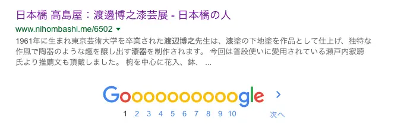
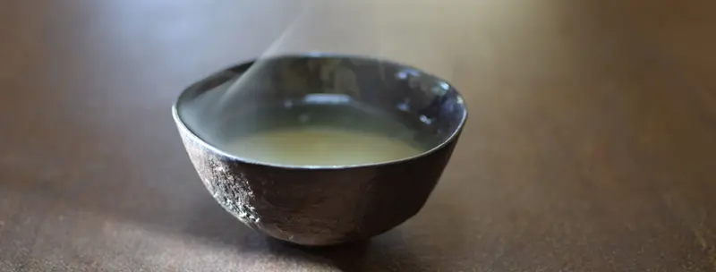

伝達2
2017-06-25-15:00
Googleでの検索結果2。下地肌漆工房。
以前は工房モノを作っていた。輪島地の粉や京都の砥の粉で作った錆漆を使わなくなり塗りの発注ができない。私が図面を書いて木地師さんお願いしても やはり轆轤で引いた木地は、木地師自身の形だと職人さんも、お客さんもそう思う。下地で肉付けしても許してはくれない。
埼玉に移住する2000年に工房を閉じた。
鉢（工房時代）の高台。家庭画報の角偉三郎さん特集記事では高台裏もこのような感じになっていた。もっと丈夫にしたい。一貫制作しかないでしょう。
伝達
2017-06-17-22:00
私が2010年頃から使っている乾漆のお椀。
そのお椀の裏側。
下地の肌合いを残して、普段に使える様に仕立てています。

Googleでの検索結果
下地肌がいつの間にか下地塗りになっている。それが別なところで昨年は下地のまま仕上げているという事になっていた。
恐ろしい。
検索にアップされた2012年、東京タカシマヤでの葉書撮りに選んだ乾漆の鉢。
参考にした東京国立博物館:正倉院宝物館収蔵の鉢（重要文化財）よりも長持ちできるように、原材料や制作工程を考えていました。私の使っている乾漆椀（写真上）裏側の下地肌と同じ工程で仕上げて、使用にも十分に耐えられます。
瀬戸内先生の推薦文が入るとやはり、時間を超えた作品制作をチャレンジしたくなる。
結果は1200年後かな。
食卓
2017-06-10-22:00
昨年1番人気の乾漆のコップ
一つだけ残ったので自分用に使い始めた。ワインや牛乳、水などによく使っています。
赤い器は気持ちが華やぎます。
薄手ですのでガラスコップくらいに気をつけて洗っています。
でも軽いのが良いですね。洗い物をしていると本当に漆の器は良いと感じます。
歳月
2017-05-22-23:00
平成12年の初めての京都での個展のハガキ
まだ私が浄法寺町にいる頃に、瀬戸内先生からの推薦文をいただき嬉しくもありましたが責任の重さもあり不思議な感覚でした。
この時の赤ちゃんがもう今では社会人。お姉ちゃんは展覧会の準備なども手伝ってくれたりして親父としては嬉しい。あれから17年。早いですね。
うるしの木
2017-05-17-14:00
キューガーデンの漆の本。1995年:中国四川省の漆木
樹液が自然に流れ落ちる様に傷をつけている。一番下に受け皿を置いておくと集められるので、漆を採取する英語を[tap]というのもうなずける。
樹皮もごつい。日本のものにそっくりではあるけど、これも中国の漆木。
「うるしの日本原産論」をこれから整理して今年の10月からの展覧会場にて発表します。
お姉ちゃんが和訳してくれたノートがあれば・・・ゴメン
カジってしまった 2
2017-03-28-09:00
カジってしまった
2017-03-21-09:00
妹の箸の修理
このまま数日食べていたのが可笑しい
そんなに使ってくれるのなら
嬉しくて修理している。
お茶椀
2017-03-20-08:10

私のお椀。
ご飯を食べて、お茶を飲む
抹茶ではない。普通のお茶
妻も子供も出かけていなくなった後の一服
TOP